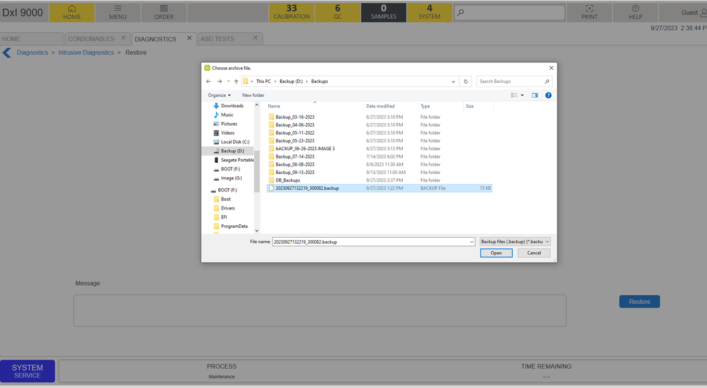
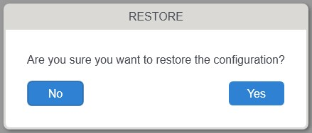

Restoring Alignment and Configuration Data
This topic includes information about how to restore alignment and configuration data.
Note: For more information about backing up alignment and configuration data, see
Backing Up Alignment and Configuration Data.
| Table of Contents |
|---|
| About this Process |
| Restoring Alignment and Configuration Data |
About this Process
This process restores the system hardware settings (alignments and similar). The process is "intrusive" because it should only be performed during system downtime. The process does not restore patient data like curves, QC, etc.
Note: For more information about how this and other processes interact with backups and settings files, see
Process Interactions with Data Files and Databases.
| Impacted Data files/Databases | |
|---|---|
| -.data | |
| -config Backup.json | |
| .Backup | Restores instrument settings and alignments from Nonintrusive backup |
| ICE_DB | Instrument specific settings are restored from .backup file. |
| Samples_DB | |
| QC_DB | |
| RMS_DB | |
| Alignments_DB | Alignments are restored from .backup file. |
Restoring Alignment and Configuration Data
Perform this procedure to restore alignment and configuration data.
- Be sure the instrument is in a GREEN (Ready) or YELLOW (Paused) status.
-
Open the Console App and the Machine Control App.
- In the Console App go to and select Start Session.
- Select Restore to open the Restore page.
-
Select Restore. The Choose archive file dialog will be displayed with the list of backup files.

-
In the D:\Backups\DB_Backups folder, select the desired backup file.Note: If you do not see any .backup files listed, you must configure Windows to show hidden files, folders, and drives.
- Open File Explorer from the Windows taskbar.
- On the View tab in the Show/hide area select Hidden items.
- The question
Are you sure you want to restore the configuration? will be displayed.

- Select Yes.
- Restart the PC. See Restarting the Console PC for more information.
- Initialize the instrument. See Initializing the Instrument for more information.